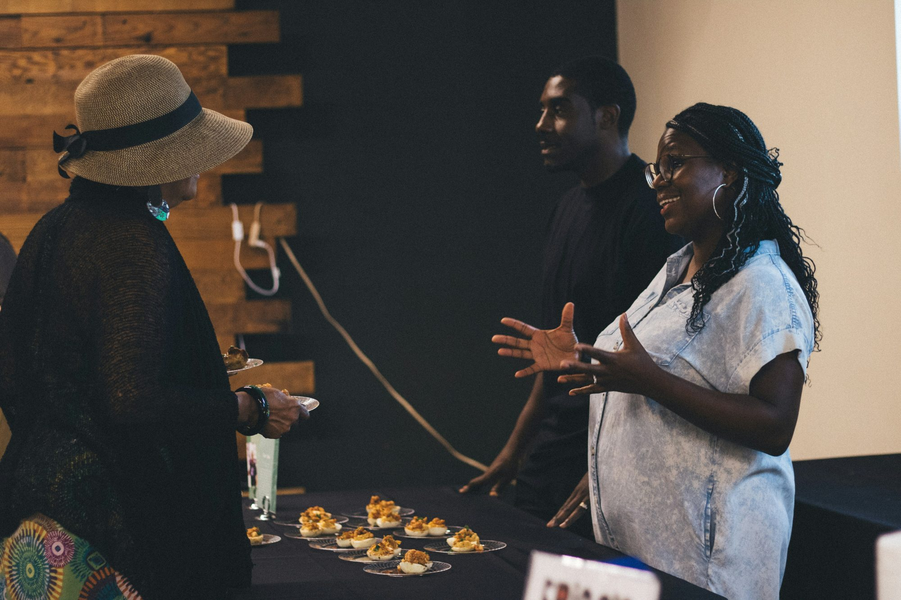
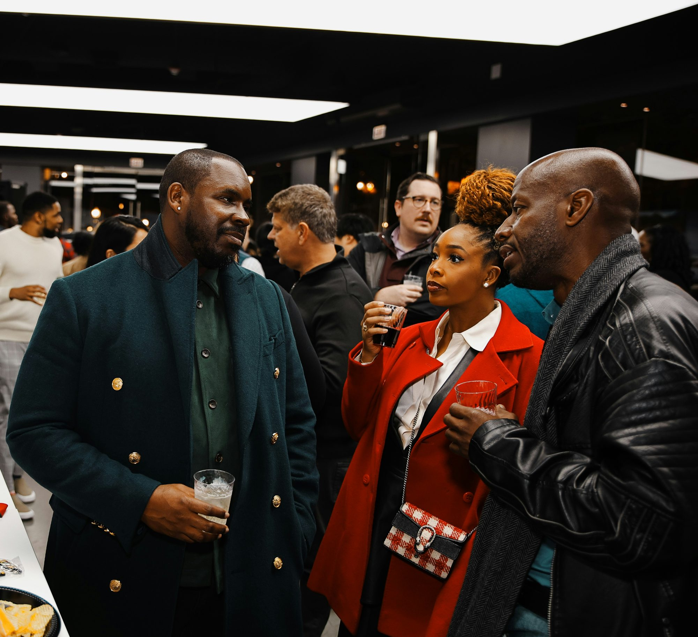

It is always a party for our Mother.
For months you have prayed for strangers known to you only by a baptism name, and strangers have prayed for you. Then, twice a year, the doors open and the strangers walk in.
 Twice a year
Twice a year
A room full of Pauls, and nobody knows which one prayed for you.
Everyone in the network is known by their baptism name. Even in the same room, you will never know whose intentions you carried, or who carried yours. That is not why we gather. We gather to share the physical communion that a network of prayer makes us hunger for.
We pray. We talk. We learn. We eat.
We pray, praise and worship.
The beads we have held alone all season are finally held side by side. We sing loud, we fall quiet before the Lord, and we remember who all of this has been for.

We tell the truth about prayer.
We talk honestly about the weeks we struggled and the weeks we thrived: what stopped us praying, what helped us keep going, and what we will do differently.
We go deeper into the faith.
We take time to strengthen our understanding of what the Church teaches, so the faith we pray every day is a faith we understand.

We break bread.
Then the tables fill, and we share a meal with the strangers we trusted to care for our faith.

This is what keeps us praying.
Every gathering is built around one practical question: what stops us from praying every day, and how do we overcome it together? We leave with honest stories, habits that work and fresh strength for the next six months of the Rosary.
We arrive as strangers. We leave stronger.
2
Twice a year, the strangers meet.
Every six months, Strangers for Mary comes together in person. Some gatherings are also held for a stranger's need, when the network rallies around someone waiting to receive help. Dates and places are announced as each gathering is set, and every stranger who signs up hears first.
A date every stranger circles on the calendar.
We are not starting a new church or a new parish; our home is the parish you already belong to. A gathering is a one-time occasion, a celebration our Mother hosts twice a year, that strangers can look forward to, plan for and bring their hunger to.
Save a seat. Better still, save two.
Join the strangers today, and bring someone with you to the first gathering.
Join the strangers